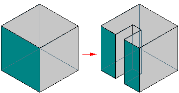
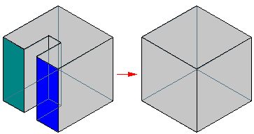
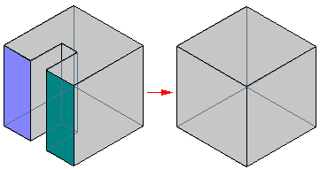
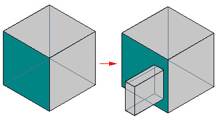

Using Color Manager and Part Painter
Solid Edge contains commands that work together to help you manage part colors and styles.
The Color Manager command provides settings that allow you to manage your color display modes. You can set the display mode to use the colors defined on the Colors tab In the Solid Edge Options dialog box or you can set the display mode to use the colors of the individual parts. In the Assembly environment, the Show and Allow Assembly Style Override option is available to allow you to override part styles.
The Part Painter command  allows you to apply styles to part faces, features,bodies, and construction elements.
The Part Painter command applies override styles to the base styles that are defined in the Color Manager dialog box.
allows you to apply styles to part faces, features,bodies, and construction elements.
The Part Painter command applies override styles to the base styles that are defined in the Color Manager dialog box.
Using Color Manager in the Assembly environment
In the Assembly environment, Color Manager is set, by default, to use the colors defined on the Colors tab in the Solid Edge Options dialog box. You can change these colors from the Color Manager dialog box by selecting a color and then selecting the Change button.
If you do not want to display all parts in the same color, you can select the Use Individual Part Styles option. You can then override the style definition for the individual parts in the assembly with an assembly style definition without changing the part-level style definition. You also can turn the display of face styles on and off. You can apply unique colors, textures, and so forth to the parts with the Faces Style option on the Select command bar.
You can make face style assignments to any part at any level in the assembly. You do not have to in-place activate a part or subassembly to apply color overrides. You can multi-select parts and subassemblies graphically or through Assembly PathFinder. If you override the style for a subassembly, the new style is assigned to each part occurrence, including the parts in lower level subassemblies.
You can apply assembly style overrides at or below the highest level within a nested assembly structure. The assembly color overrides are stored in the top-level assembly. If you in-place activate into a subassembly, the subassembly will always show the colors that are stored at the top-level assembly. If you open the subassembly outside of the context of parent assembly, it becomes the top-most assembly and any assembly overrides are stored in it. However, when you reopen the parent assembly, the color overrides that were applied at the subassembly level are not rolled into the parent assembly. When you place a subassembly into an assembly, the top-level assembly reads any style overrides for the subassembly and saves any override definitions that have been applied at the top level.
The style override applies to the whole part. For example, if you apply an assembly override to a multicolored part, the specified color override applies to the whole part. Multiple part occurrences at the assembly level can have different assembly overrides. You can specify whether the override applies to all occurrences of the part or to individual occurrences.
After you have applied individual colors to the parts in your assembly, you can use the Color Manager command to control whether the individual colors are displayed or whether all parts are displayed using the same color.
Using Color Manager in the Part environment
In the Part environment, Color Manager is set by default to use the individual part colors. You can select a base style for parts, construction elements, and threaded cylinders.
The Show and Allow Assembly Style Override option is not available in the Part environment. You can set the display mode to use the colors defined on the Colors tab on the Solid Edge Options dialog box, or you can set the display mode to use the colors of the individual parts. The Copy Individual Face Colors option is available to allow styles that have been applied to individual part faces to be copied when the feature is copied and pasted, smart patterned, smart mirrored, or copied to a feature library. These styles cannot be copied if the feature is fast patterned or fast mirrored.
When you set the Use Individual Part Styles option in the Color Manager dialog box, the Part Painter command becomes available. This command allows you to apply style overrides to individual features and faces.
Style results after faces are modified
If you apply a face style to an individual face and then split that face, the resulting faces inherit the face style that is currently applied to the face.

If you merge two individual faces that have separate face styles, the new faces reverts back to the base part style.

If faces that result from a split face have two different styles are rolled back to the point before the split, the single face returns to the base part style.

If you add a feature to an existing feature that has an individual face style override, the new feature carries the base part style. It does not inherit the style of the parent feature.

Base styles in different environments
In the Simplified mode in the Part environment, the part reverts back to the base part color and style. You can add colors, but these colors will only display while you are in the Simplified mode. Within the Simplified mode, the Part Painter command only applies to the faces.
In the Flatten mode in the Sheet Metal environment, the part reverts back to the base part color and style. You can add colors, but these colors will only display while you are in the Flatten mode.
If you place a cutout in the Assembly environment, the faces on the cutout inherit the base part color that is defined in the individual part files.
How do I
Set the Color Scheme for Solid EdgeSet the part color display
Apply an override to the base part style with Part Painter
Display Element Colors Based on Degrees of Freedom
Display draft face colors on a part
Learn more
Using colors in Solid EdgeUsing 3D model colors in drawing views
Look up more details
Color Manager commandColor Manager dialog box
Part Painter command
Part Painter command bar
Relationship Colors command
Color dialog box